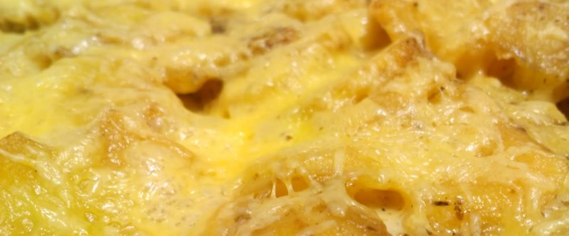

Картошка запеченая с сыром

- TODO
Почистить картошку, нарезать на четвертинки, варить почти до готовности. Разогреть духовку до 150 градусов.
Слить воду, натереть сыр, нарезать укроп (можно использовать сухой). Картофель выложить в блюдо для запекания, посыпать укропом и сыром (можно добавить немного майонеза для корочки и выдавить чеснока для пикантности).
Запекать в духовке 5-7 минут.
 Назад к списку рецептов
Назад к списку рецептов